Rotation 7
This week we learned about Soldering where I made my own cirucit board for a clock by connecting the pieces of the circuit board to by using a soldering machine and a thin metal wire and how we had to put the solder on the metal tip before using the wire to connect the piece and the circuit board together. Then we learned about circuits and the different parts in a circuit. Some common parts in a circuit are a capacitor(function is to store electrical charge), transistor (function is to swtich or amplify electricity), resistor (function is to reduce to amount of electric charge in a circuit), LED (function is to emitt light when electrical energy passes through it), diode (function is to conduct or direct energy in a certain direction), potentiometer (function is to change the amount of electrical charge in a circuit), breadboard (function is to be used as a way to test different types of circuits), multimeter (function is to measure amount of voltage, current, and resistance), and switch (function is to either open or close a circuit). The difference between volatge and Current is that current is the rate the electricity travels at while volatage is the potential energy the electricity travels, and Resistance is the amount of electricity that is reduced in the circuit. The different between Alternate and Direct Current is that alternate current travels in different directions while direct current travels in only one direction.
For the circuits, the first one (the one in the Top left corner) is a basic circuit consiting of a circuit, a basic light bulb, and a resistor. the second one is the one to the right of the one, and it was only different because I used two LEDs because of the lightbulb not lighting as much and I put two LED's in the circuit. Third one is another version of the first circuit with the addition of a diode to direct the electricity. The fourth one
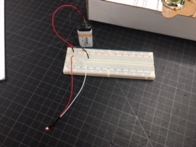
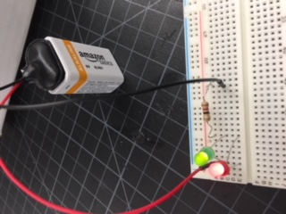
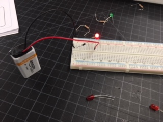
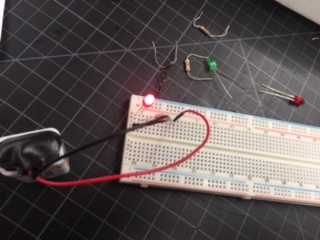
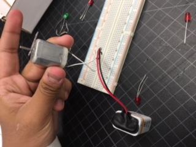
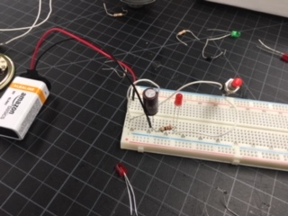
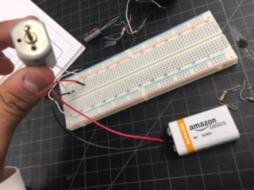
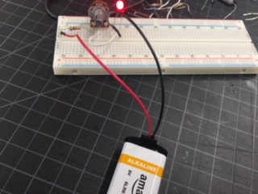
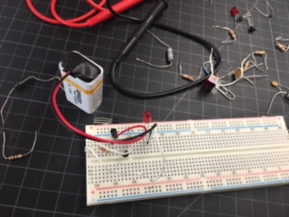
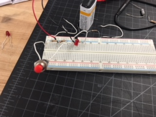
.JPG)
.JPG) 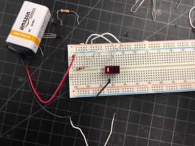
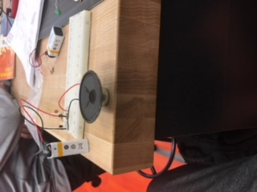
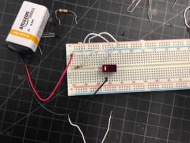
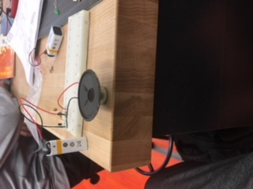
.JPG)
.JPG)
Return